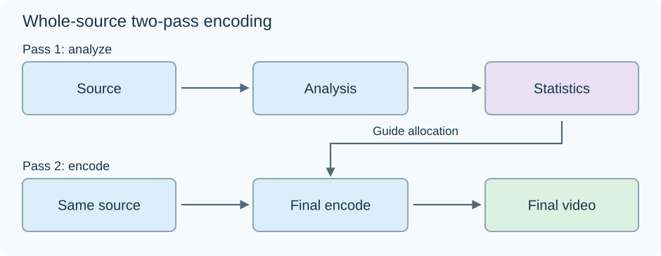

Two-Pass Video Encoding
Suppose an offline conversion must fit 40 seconds of video into an average 4 Mb/s. Its video budget is:
40 ×4 =160 megabits, or 20 decimal MB.
The encoder can spend that budget differently in different scenes. Two-pass encoding first analyzes the source so its final allocation can use knowledge of the complete sequence.

The final pass reads the original source again; statistics guide its choices.
Analyze before making the final allocation
A first pass evaluates picture difficulty and coding relationships. Its statistics can describe prediction costs, picture types, bits produced or estimated, and information useful for allocating precision later.
Suppose four ten-second scenes receive illustrative difficulty weights 1,1,4,2. A deliberately simple planner assigns budget proportional to these weights:
| Scene | Declared weight | Allocated data | Rate across ten seconds |
|---|---|---|---|
| A | 1 | 20 Mb | 2 Mb/s |
| B | 1 | 20 Mb | 2 Mb/s |
| C | 4 | 80 Mb | 8 Mb/s |
| D | 2 | 40 Mb | 4 Mb/s |
| Total | 8 | 160 Mb | 4 Mb/s overall |
This is an original proportional-planning example, not x265's rate-control formula or a measured encode. Real allocation models and local buffer constraints are more involved.
Knowing that C is difficult lets the planner reserve more data for it while keeping the whole budget. A controller making decisions with only a short lookahead has less information about the complete video's later demands.
Encode the source with the plan
The second pass decodes or reads the same source pictures, uses the statistics to guide its quantizers and other choices, then produces the final bitstream.
Actual coded sizes can differ from an estimate, so rate control updates its decisions as the encode proceeds. A local rate/buffer limit can also prevent spending the planned 80 megabits evenly or freely in C. The complete-file objective and the local deadline constraints both need to be satisfied.
The first pass's compressed pictures are not ordinarily the second pass's source. Its useful output is the statistics. That is why analyzing and then encoding do not automatically create two successive lossy generations.
Keep the statistics attached to their source
The analysis describes a particular picture sequence. Changing its trims, picture order, scale, filtering or other relevant processing before the final pass can make those statistics describe the wrong input.
The two passes therefore need consistent source and processing context. If a first pass uses faster analysis settings, those are deliberately chosen as part of the encoder's documented process, while the source relationship remains intact.
Audio and packaging also occupy space if the objective is a complete-file size. The 160-megabit example is a video-only budget; reserve those other contributions separately when planning a full output.
Hardware multipass has a smaller scope
An encoder such as NVENC can analyze a frame in an internal pass, then use the result when encoding that frame. Its analysis can improve the distribution within the picture.
That is not a first scan of the entire 40-second clip followed by a second reading. Both are called “passes,” but the amount of future source information available differs.
Whole-source two-pass preparation suits an offline library derivative whose final budget matters. An immediate Emby playback transcode needs to begin output without waiting for a whole-film analysis. Its controller instead works with the information available at that stage of delivery.
See Also
- Variable Bitrate Video Encoding
- Constant Rate Factor (CRF) for Video
- Video Encoder Presets
- Video Bitrate